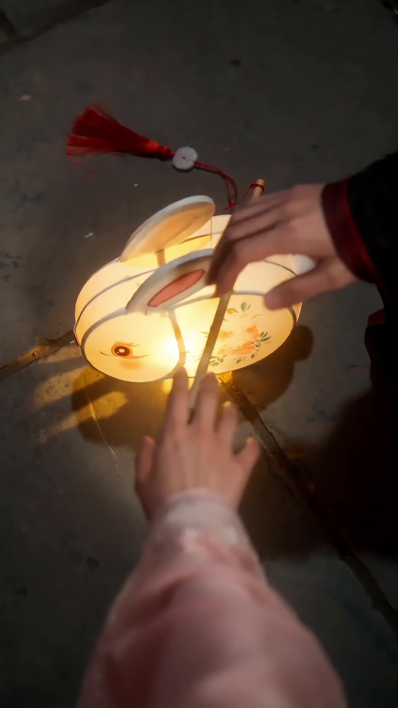
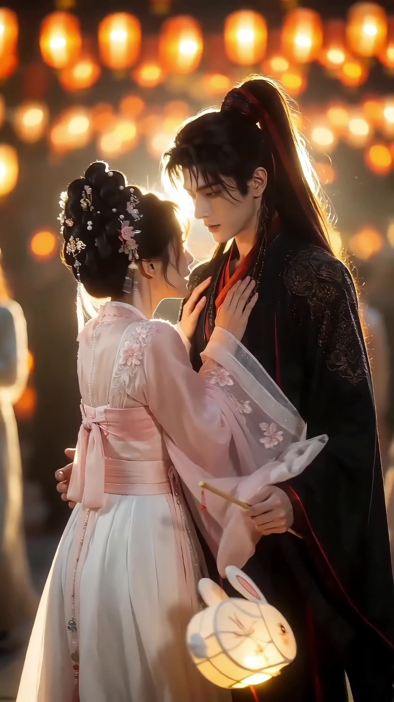
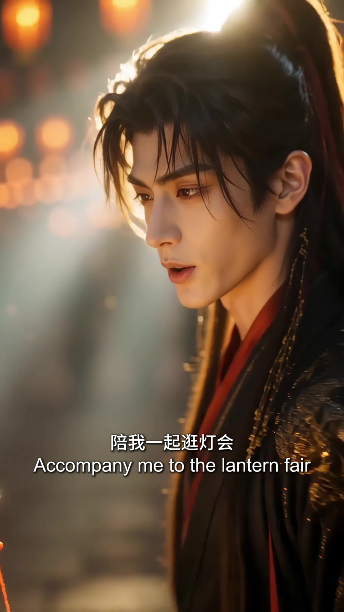
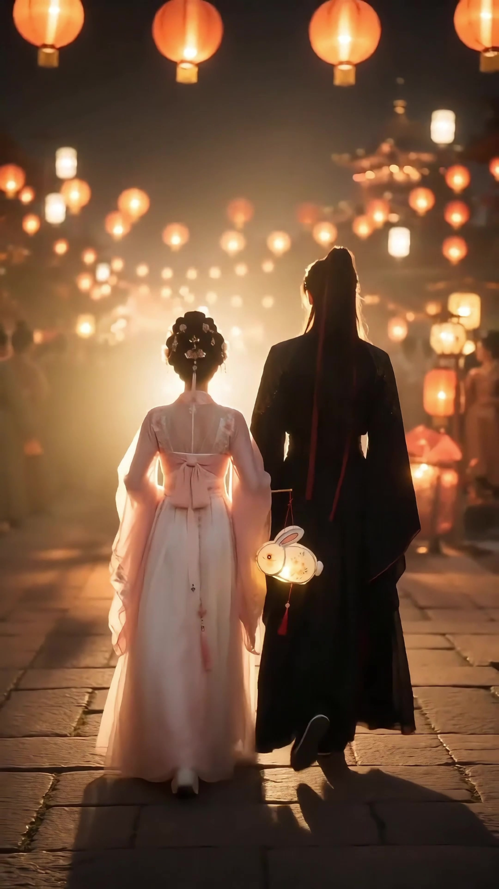
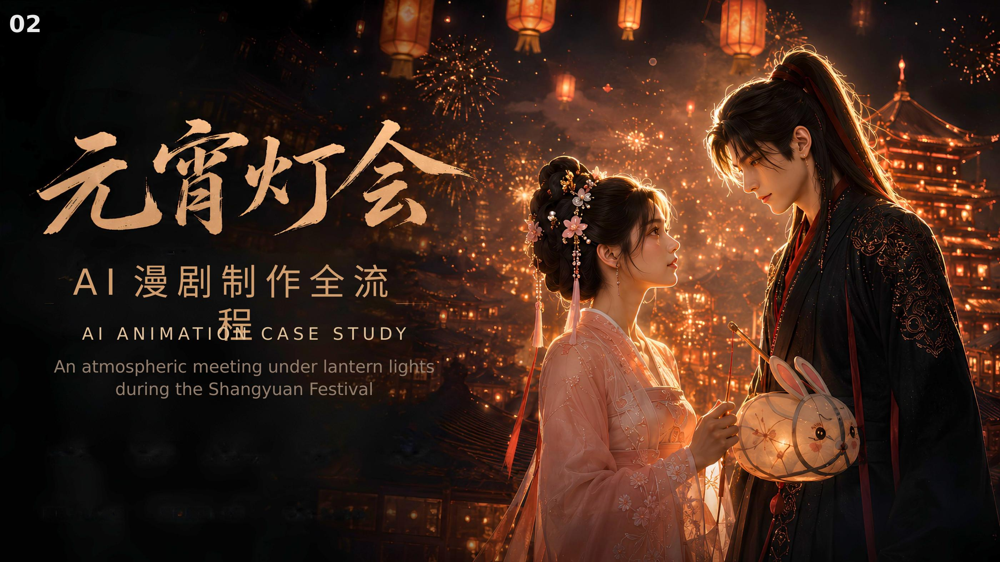
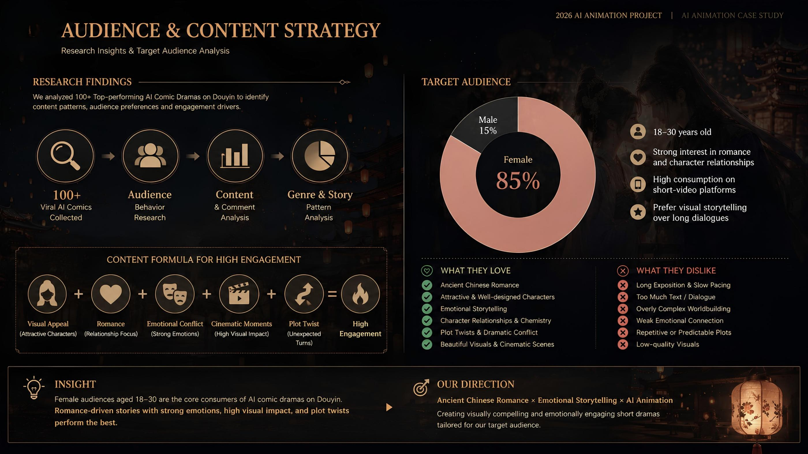
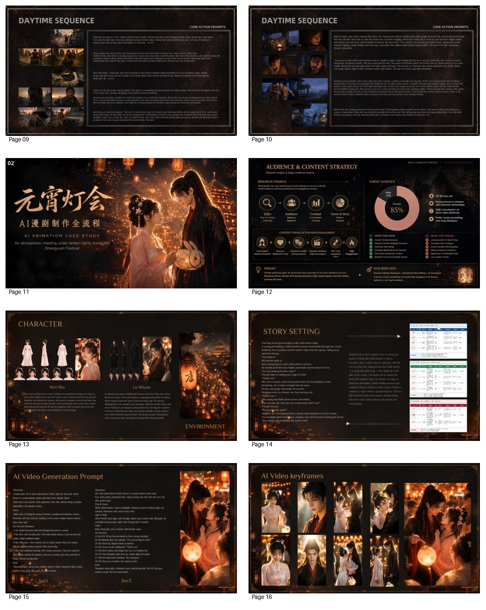

AI-ASSISTED SHORT / GUOFENG ROMANCE · VERTICAL VIDEO
元宵灯会 / Lantern Festival
一个 AI 辅助完成的国风浪漫叙事短片项目，采用 9:16 竖屏形式，以元宵灯会为背景，通过人物相遇、对视与并肩而行的情绪推进，呈现中式节庆场景中的电影感氛围与角色一致性控制。An AI-assisted Guofeng romantic short in 9:16 vertical format, set during a lantern festival. The project uses encounter, eye contact, and walking-together beats to create a cinematic emotional flow, while showcasing atmospheric worldbuilding and character consistency.
AI Animation Case StudyVertical VideoGuofeng RomanceLantern FestivalCharacter Consistency
Duration0:52
Format9:16 竖屏短片 / AI 漫剧案例9:16 Vertical Short / AI Animation Case Study
视频为竖屏格式，适合移动端观看，也适合作为作品集中短视频叙事、角色一致性和节庆场景氛围控制的案例展示。The film is vertical and mobile-friendly, making it suitable for demonstrating short-form storytelling, character consistency, and festive atmosphere control.
从视频内容来看，这个项目围绕元宵灯会中的一次浪漫偶遇展开：从热闹的灯市远景，到人物在人群中的寻找，再到兔子灯落下、双手相触、人物近景对视，最后回到两人并肩走入灯火之中的收束镜头。整体更接近“AI 辅助漫剧短片 / 视觉化叙事案例”，而不是单纯的国风海报合集。Visually, the story unfolds as a romantic encounter during a lantern festival: from wide festival views to crowd-searching, a dropped rabbit lantern, overlapping hands, close-up gazes, and a final walk into the light. It reads as an AI-assisted narrative short rather than a static visual poster series.
画面以暖红、金色灯光和古街夜景为主，利用高密度人群、烟火、灯笼与浅景深构成浓厚的节庆氛围；人物面部、服装和情绪表演则承担主要叙事功能。Warm reds, golden lantern light, old-street night scenes, fireworks, and shallow depth of field create a dense festive world, while facial performance, costume detail, and emotional beats carry the narrative.
画面节奏与情绪节点Visual Beats & Emotion

人物寻找Searching in the Crowd
主角在人流中寻找对方，适合强调短视频叙事中的“第一情绪钩子”。A crowd-searching moment that works well as the first emotional hook.

人物近景Character Close-Up
近景特写承担人物识别与情绪传递，也是角色一致性的关键展示位。Close-ups carry identity and emotion, and are crucial for showing consistency.

灯会远景Festival Wide Shot
大远景展示繁华灯市与烟火，强化了项目的国风场景构建能力。A large-scale festival shot reinforces scene-building and world richness.

情绪收束Emotional Resolution
结尾氛围更柔和，适合用来说明短片在情绪上完成了完整闭环。The softer final mood helps show a complete emotional arc.
项目流程Process Added from PPT

01 封面与项目定位01 Cover & Positioning
《元宵灯会》以“AI Animation Case Study”的方式呈现，主视觉是元宵灯火下的古风相遇场景，适合作为网站封面主视觉。PPT page 11 frames Lantern Festival as an “AI Animation Case Study” with an atmospheric meeting under lantern lights, making it a strong website cover visual.

02 受众与内容策略02 Audience & Content Strategy
项目面向抖音与小红书等短视频平台，以古风浪漫、情绪氛围和中国传统美学吸引核心受众，适合在网页中单独说明项目定位。The project is positioned for short-video platforms like Douyin and Xiaohongshu, emphasizing romance, atmosphere, and traditional Chinese aesthetics for its core audience.
过程步骤Process Steps
01 · 故事设定：围绕元宵灯会中的寻找、相遇、对视与并肩离开建立完整的短视频情绪线。Story Setting: build a complete emotional line through searching, encounter, gaze, and departure at the lantern festival.
02 · 受众策略：明确项目面向短视频平台，以古风浪漫、沉浸氛围和情感推进作为核心抓手。Audience Strategy: target short-video audiences through Guofeng romance, immersive atmosphere, and emotional progression.
03 · 角色设计：明确温姝与陆时宴的人物形象、服装风格、表情状态与动作关系。Character Design: define Wen Shu and Lu Shiyan through costume, facial expression, and interaction logic.
04 · 场景与道具：以古街夜市、花灯、兔子灯、烟火和高密度人群建立节庆空间与叙事氛围。Scene & Props: build the festive world through an old-street market, lanterns, rabbit lantern, fireworks, and dense crowds.
05 · AI视频提示词：围绕暖橘/绯红/金黄色调、体积光、唐风现实主义、4K、9:16竖屏撰写生成指令。AI Video Prompting: develop prompts around warm orange / crimson / gold lighting, volumetric glow, Tang-style realism, 4K, and 9:16 framing.
06 · 关键帧与成片：先稳定角色与情绪锚点，再生成关键帧、镜头段落与最终竖屏成片。Keyframes & Final Film: stabilize character and emotional anchors first, then generate keyframes, shot segments, and the final vertical film.
故事设定与情绪节奏Story Setting & Emotional Rhythm
《元宵灯会》以元宵佳节为叙事背景，围绕人群中的寻找、灯会中的相遇、兔子灯掉落、双手相触、近景对视与并肩走向灯火构成完整情绪链。它不是静态海报展示，而是以短视频节奏完成“相遇—确认—情绪收束”的轻量叙事。Lantern Festival is set during the Shangyuan celebration and builds a full emotional chain through searching in the crowd, a festive encounter, a dropped rabbit lantern, touching hands, close-up eye contact, and a final walk into the lights. It functions as a short-form narrative rather than a static poster set.
受众与平台定位Audience & Platform Positioning
项目面向抖音、小红书等短视频平台，内容类型更接近“古风言情漫剧 / AI 叙事短片”。报告中提到女性受众占比较高，因此页面也更强调情绪氛围、角色对视、浪漫关系与节庆场景沉浸感。The project targets short-video platforms such as Douyin and Xiaohongshu, aligning with a Guofeng romance manhua-drama / AI narrative short. The report notes a strongly female audience share, so the page emphasizes atmosphere, gaze exchange, romantic tension, and festive immersion.
我的职责与工作内容My Responsibilities
• 负责中期场景设计与关键帧创作，建立统一美术标准，保证项目整体视觉风格稳定。Handled mid-production scene design and keyframe creation while establishing unified art standards for stable overall visuals.
• 根据镜头与情绪需求优化 AI 提示词，推进国风场景、角色服装与情绪表演的生成控制。Optimized AI prompts according to shot and emotional needs, guiding Guofeng scenes, costume design, and emotional performance.
• 参与角色设定与 AI 动画测试，统一人物比例、动作逻辑与镜头中的身份一致性。Worked on character setup and AI animation testing to unify proportions, motion logic, and character identity across shots.
• 控制构图、光影、体积光与节庆氛围，并输出可直接进入后期剪辑的标准化素材。Controlled composition, lighting, volumetric glow, and festive atmosphere, delivering standardized assets ready for post-editing.
• 结合即梦 Seedance 2.0 等流程进行风格一致的动画测试与画面整合。Used workflows including Jimeng Seedance 2.0 for style-consistent animation testing and shot integration.
角色与设定Characters & Setting
从过程材料可见，这个项目不是只做成片，还额外整理了角色与场景设定。角色名为“温姝”“陆时晏”，并通过夜市古街、花灯、兔子灯和烟火等元素，建立出明确的元宵节世界观与浪漫叙事语境。The process materials show that the project includes more than a final film: it also organizes character and scene setup. The leads are Wen Shu and Lu Shiyan, while lanterns, fireworks, old streets, and a rabbit lantern shape a recognizable festival-world romance.
网站呈现建议Portfolio Positioning
在你的作品集中，它最适合被定位为“AI 辅助国风漫剧案例 / 竖屏叙事短片”，重点展示：角色一致性、移动端短视频叙事、节庆人群场景控制、受众策略、提示词逻辑，以及从角色设定到关键帧再到成片的完整方法链。In your portfolio, this fits best as an “AI-assisted Guofeng narrative short / vertical animation case study,” highlighting character consistency, mobile-first storytelling, festive crowd-scene control, audience strategy, prompt logic, and the full chain from character design to keyframes to final video.
过程报告页Process Report Pages

过程报告页：元宵灯会案例Process Report: Lantern Festival Case Study
这里只保留《元宵灯会》相关报告页。内容包含项目封面、受众策略、角色与场景设计、故事设定、AI 视频提示词与关键帧展示，更适合作为本项目的单独过程页。Only the Lantern Festival-related report pages are kept here. They include the cover, audience strategy, character and scene design, story setting, AI video prompts, and keyframes, making this a cleaner process section focused on the project itself.